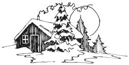

Meegwetch, MOTHER! (That's Cree for "thank you".) For five months I've been using Mark Gregory's recommendations on old-house-finding (MOTHER NO. 17) to locate a place in the country for just me and my animals. Sure enough, Method No. 3-scouting the back roads-worked . . . and now, while the dark wind heaves heavy snow upon this northland, here I sit by my wood stove, the coals purring . . . quiet, warm, happy.
What a deal I found! I'm renting an old Finnish homestead near Nolalu, Ontario. There's the house (two large rooms), a huge barn with a floor in it, a woodshed, a sauna (Finnish stern bath), a root cellar built right into the hill, a well with a bucket-on-a-pole, and an outhouse. And all of this is mine for the using at $5.00 a month plus the cost of fuel.
Because the Finnish people knew how to carve a good life out of a hostile environment, my home was built for the wind, the sun and the cold. For example, there's a heavy clump of white spruce and Scotch pine planted squarely to the north and west of the house. Why? Well, the prevailing winds are nor'westers, and when I look out there today I'm sure glad of that bank of trees . . . that wind, she must be pushing up to 60 across the fields. Both doors have wind-jambs, too, so the door won't blow off when you open it to the gusts, and there are little front and back porches so that less cold gets in when you go out.
The crawl space under the house has an opening at each corner and the air circulation down there keeps the base beams dry to prevent rot and insect infestation. The attic, which must be almost five feet high, is filled with a two-foot layer of sawdust for insulation. There are lightning rods on the roof, too.
Although the house has no electricity, it provides for basic needs in other ways. A space heater warms the living room, and I have the trusty company of the wood stove in the kitchen. (Wood ashes, by the way, can be used in the outhouse to take the odors away and make it look nicer. I don't know if they speed up the rate of decomposition. Anyone who's going to try this, be sure the ashes and coal are dead cold, and store them in a metal container to be safe.)
The inside of my home has some unique features. There's a "china-cabinet-in-the-wall" (a cupboard with glass windows in the doors) and a "fridge-in-the-floor" (a hinged trapdoor with a box-like shelf down there for keeping food cold). I've also unearthed some other useful old items: a wooden keg com plete with spigot, a hand-powered clothes wringer with metal rollers and a spring clip for tension, a hand-cranked record player and three bear traps.
Let me add a word about country folk in these parts: They change very slowly. Each area has its customs, and the sooner you accept these ways, the sooner you'll be accepted by the community. Little things . . . in Tobermory, Ontario, if you don't have a large preserving jar full of spoons out on the kitchen table, nobody will stay to tea. In Nolalu, it's the sauna . . . you just don't go visiting after dark without bringing your soap and towel along.
It's a good thing I love the sauna, because there are several ways in which I deviate from the norm here: I live alone, I don't have a car, I don't have hydro and I do have a university education. Nevertheless, because I'm into the customs, I feel I'm being accepted now. Once you know them, country folk are the best friends and neighbors you could ask for. They fulfill your every need before that want becomes an urgent necessity.
So thanks again, MOTHER . . . you constantly renew my belief that there is a better way and that I can live it too. And good luck to all my brothers and sisters in their similar endeavors. If you believe in Mother Earth, she'll help you find a way.
Joyce Young
Thunder Bay, Ontario, Canada
|
 |
|
|